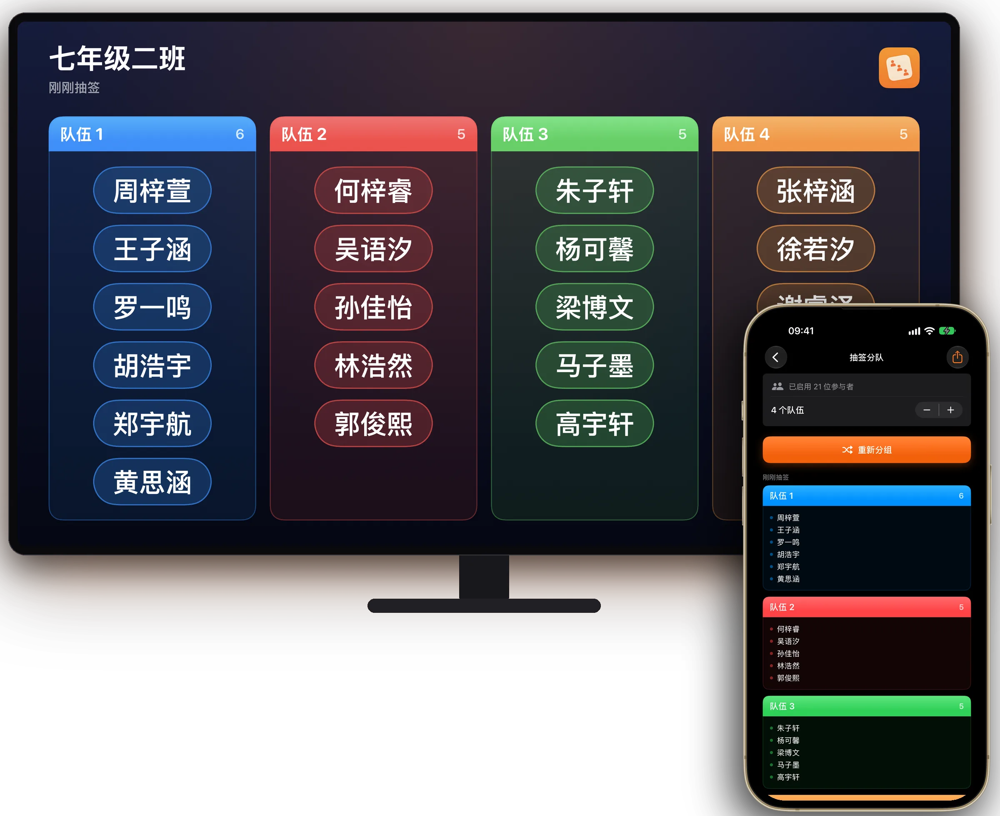
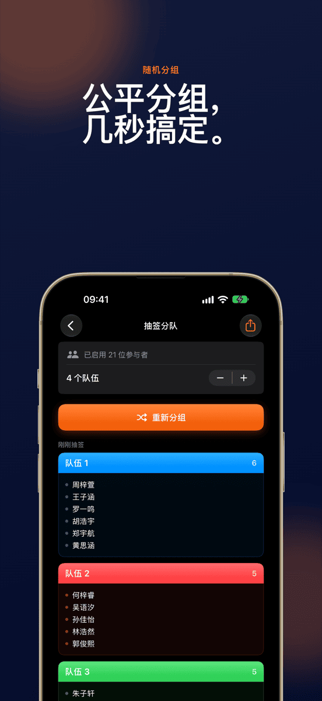
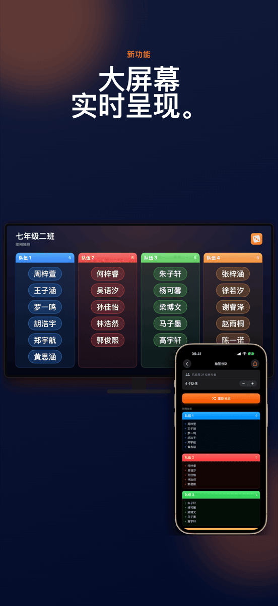
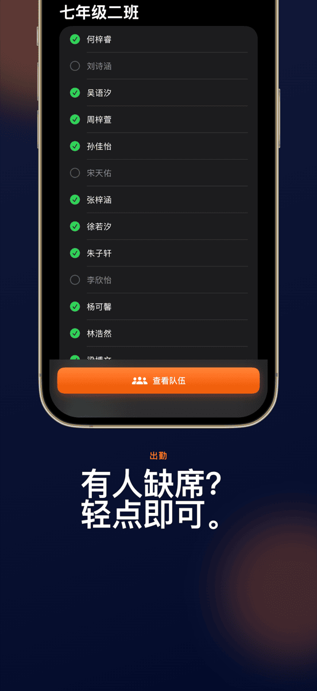
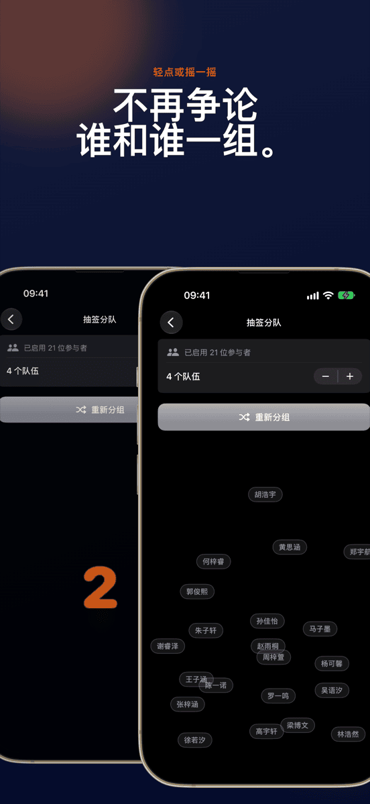
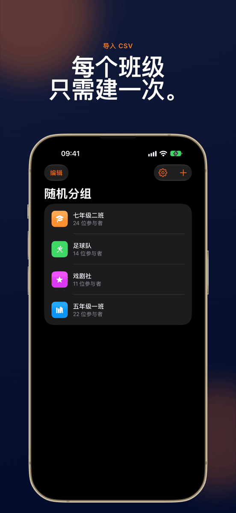
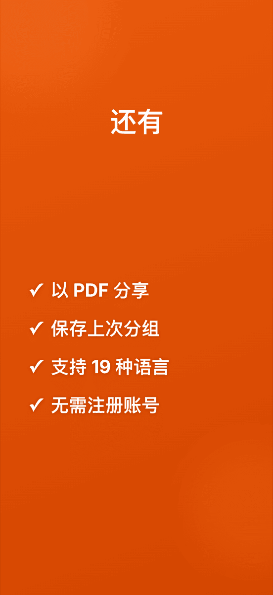

新功能大屏幕实时呈现
随机分组
公平分组，几秒搞定。







分队不再争论。
大屏幕实时呈现
通过 AirPlay 或连接线，全班一起看着队伍逐一成形。
轻点一下就好
所有人随机、平均地分到各队。
分组自动保存
班级、队伍或社团只需创建一次，之后随时抽签。每个分组都会保留上一次的抽签结果。
缺席就不参加
轻点一下取消勾选缺席者，抽签会跳过他们。
队伍数量随意
两人一组、三人一组、四人一组或更大的队伍。
当众洗牌
动画在大家眼前打乱所有名字。摇一摇设备即可开始新一轮。
就这么简单。
创建分组
输入名字或导入 CSV。
取消缺席者
今天缺席的人，每人轻点一下。
抽签
选择队伍数量，轻点，观看。
展示
投到投影仪上，或分享 PDF。
指南
常见问题
如何把一个团体随机分成几队？
在随机分组中创建一次分组，添加成员，然后开始抽签。应用会把所有人随机、平均地分到你选择的队伍数量中。
随机分组适合谁用？
适合经常需要分队的人：老师、教练、工作坊主持人、社团和活动组织者。
可以自己决定队伍数量吗？
可以。从两人一组到大队伍，队伍数量由你决定，随机分组会平均分配成员。
我的数据会被保存或上传吗？
所有分组和名字只保存在你的设备上，不会向任何服务器发送数据。
可以从 Excel 导入名单吗？
可以。从 Excel 或 Google 表格导出 CSV，再导入随机分组，几秒钟就能建好整个班级。
可以在投影仪上显示抽签吗？
可以。iPhone 或 iPad 通过 AirPlay 或连接线接上投影仪、Apple TV 或显示器后，随机分组会在那里横屏实时显示抽签过程，操作仍在你的设备上进行。
随机分组要多少钱？
下载和首次抽签免费。之后的抽签需要按月或按年订阅 Pro，可先免费试用。随机分组支持 iOS 17 及以上的 iPhone 和 iPad。